교통기사 (2019-03-03 기출문제)
1과목: 교통계획
1. 교통정보체계 구축방향에 대한 설명으로 옳지 않은 것은?
- 정보내용의 코드체계를 표준화한다.
- 모집되어야 하는 자료목록을 작성한다.
- 국토정보체계의 sub-system이 되도록 한다.
- 교통정보가 공유되지 않도록 특수체계를 사용한다.
(정답률: 95%)

2. 주어진 도로 조건에서 15분 동안 무리 없이 최대로 통과할 수 있는 승용차를 교통량을 1시간 단위로 환산한 값은?
- 도로 용량
- 1시간 환산 교통량
- 승용차 환산 교통량
- 최대 서비스 교통량
(정답률: 60%)
3. 교통정보체계 구축방향에 대한 설명으로 옳지 않은 것은?
- 교통을 크게 공간과 수단으로 구분할 때, 공간적 분류는 교통이 일어나는 지역적 규모에 따라 분류한다.
- 공간적 분류에 의한 지역교통은 도시 내 교통의 효율성 증진을 목표로 도시 경제활동을 위한 교통 서비스로서 단거리 이동이 많은 특성을 갖는다.
- 지구교통은 안전하고 쾌적한 보행자 공간의 확보와 대중교통체계의 접근성 확보를 목표로 하여 보행 교통지구 내의 교통을 처리하는 특성을 갖는다.
- 교통 수단에 의한 분류는 승객이나 화물이 이용하는 교통수단을 유형별로 분류하는 방법으로 개인교통수단, 대중교통수단, 화물교통수단, 보행교통수단 등 다양한 분류가 가능하다.
(정답률: 67%)
4. 다음 중 차량 번호판 조사의 내용으로 옳지 않은 것은?
- 차량의 차종
- 차량의 번호
- 차량의 통행목적
- 차량의 통과시각
(정답률: 80%)
5. 교통사업의 경제성 평가방법인 초기연도수익률법의 장점으로 옳은 것은?
- 계산이 간편하다.
- 사업규모의 고려가 가능하다.
- 할인율을 고려하므로 오차가 발생하지 않는다.
- 비용과 편익이 발생하는 시간의 고려가 가능하다.
(정답률: 68%)
6. 평형배정모형에 있어 운전자가 이기적으로 자신의 통행 시간만을 단축시키려는 의도가 결과적으로 모든 운전자에게 피해를 초래하는 현상은?
- 브라에의 역설(Braess's Paradox)
- llA(lndependence of lrrelevant Altemative)
- 다운스-톰슨의 역설(Downs-Thomson Paradox)
- 루이스-모그리지의 명제(Lewis-Mogridge Position)
(정답률: 76%)
7. 교통수요관리방안(TDM)으로 적합하지 않은 것은?
- 근무스케줄 단 축
- 도심통행료 부과
- 출ㆍ퇴근 시간 조정
- 주차공간 공급 확대
(정답률: 88%)
8. 교통정책 대안의 평가과정으로 옳은 것은?
- 대안작성→경제성 평가→영향분석→종합평가→최적대안 선정
- 대안작성→영향분석→경제성 평가→종합평가→최적대안 선정
- 영향분석→대안작성→경제성 평가→종합평가→최적대안 선정
- 대안작성→영향분석→종합평가→경제성 평가→최적대안 선정
(정답률: 77%)
9. 총 노선거리 30km를 25km/h의 평균 운행속도로 운행하며 배차간격이 5분인 버스가 있다. 이 때 필요한 최소 차량규모는?
- 15대
- 17대
- 19대
- 21대
(정답률: 73%)
10. 교통조사방법에서 조사결과의 보완 및 검증, 통행배정을 위해 실시하는 것은?
- 교통존 조사
- 터미널 조사
- 스크린라인 조사
- 대중교통이용객 조사
(정답률: 88%)
11. 지하철과 버스에 대한 효용함수 및 통행특성 자료가 아래와 같을 때, 로짓모형을 이용한 교통수단별 선택확률이 모두 옳은 것은? (단, 효용함수 V=-0.06(0.5X1+0.002X2))
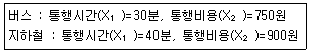
- 버스:42.1%, 지하철:57.9%
- 버스:47.9%, 지하철:52.1%
- 버스:52.1%, 지하철:47.9%
- 버스:57.9%, 지하철:42.1%
(정답률: 60%)
12. 다음 공식 중 내부 수익률(IRR)을 나타낸 것은? (단, Bt=t년도의 편익, Ct=t년도의 비용)
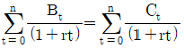
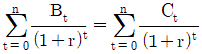
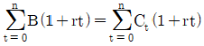
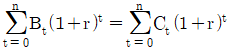
(정답률: 76%)
13. 현재의 상태가 아닌 가상의 상태에서 이용자의 행동, 태도의 변화 등을 조사ㆍ분석하는 기법은?
- 패널(Panel)조사
- SP(Stated Preference)조사
- RP(Renealed Preference)조사
- 엑티비티다이어리(Activity Diay)조사
(정답률: 86%)
14. 통행분포 단계에서 사용하는 교통존 저항관계를 반영한 모형은?
- 프라타 모형
- 디트로이트 모형
- 균일성장인자 모형
- 엔트로피극대화 모형
(정답률: 62%)
15. P요소법에 대한 설명으로 옳지 않은 것은?
- 차량의 평균승차인원을 고려하여 주차수요를 추정한다.
- 지구나 도심지와 같은 특정한 장소의 주차수요 예측에 적합하다.
- 주차수요결정에 필요한 각종 요소를 얻을 수 있는 경우 적합한 방법이다.
- 원단위법에 비하여 여러 가지 지역 특성을 포괄적으로 고려하지 못하는 단점이 있다.
(정답률: 82%)
16. 버스 노선계획에 사용하는 지표를 운행관련지표와 서비스관련지표로 나눌 때, 서비스관련지표로 옳은 것은?
- 운행거리
- 운행시간
- 배차간격
- 지하철 연계역수
(정답률: 74%)
17. 통행단 모형의 적용순서를 올바르게 나열한 것은?
- 통행발생-노선배정-수단분담-통행배분
- 통행발생-수단분담-노선배정-통행배분
- 통행발생-수단분담-통행배분-노선배정
- 통행발생-통행배분-수단분담-노선배정
(정답률: 49%)
18. 아래 표의 ()안에 해당하는 조사는?
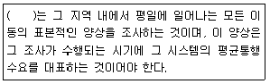
- O-D 조사
- 회전 교통량 조사
- 승하차 인원수 조사
- 가로구간 교통량 조사
(정답률: 83%)
19. 대중교통 네트워크의 구성요소에 대한 설명으로 옳지 않은 것은?
- 노선은 노선에 포함된 링크를 연결하고 모든 링크를 포함한다.
- 대중교통 네트워크의 링크는 노선을 구성하는 기본 요소가 된다.
- 대중교통수단은 일반적으로 버스, 철도, 보조교통수단(도보 등)을 의미한다.
- 버스정류장, 철도역 등은 노드로 표현되고 노선을 구성하는 필수요소이다.
(정답률: 67%)
20. 각 도로의 등급별 목표연도가 장기적인 순으로 나열된 것은?
- 간선도로＞국지도로＞집산도로＞고속도로
- 고속도로＞간선도로＞집산도로＞국지도로
- 국지도로＞집산도로＞간선도로＞고속도로
- 집산도로＞국지도로＞고속도로＞간선도로
(정답률: 91%)
2과목: 교통공학
21. 교통량이 13대/분, 차량의 평균공간속도가 1.25km/분일 때, 차량밀도는?
- 0.9대/km
- 5.2대/km
- 10.4대/km
- 16.2대/km
(정답률: 78%)
22. 신호교차로에서 혼합교통량으로 800대/시인 좌회전 이동류의 중차량 구성비가 15%이고 중차량 승용차환산계수가 1.8일 때 좌회전 보정 교통량은?
- 약 687pcph
- 약 896pcph
- 약 920pcph
- 약 1016pcph
(정답률: 62%)
23. 한 지점에서의 평균차량 도착률이 4대/분인 푸아송(Poisson) 분포를 따른다고 가정할 때 도착차량을 조사하기 시작하여 1분 후에 최초의 차량이 도착할 확률은?
- 0.073
- 0.092
- 0.137
- 0.195
(정답률: 52%)
24. 교통 용량에 관한 설명으로 옳지 않은 것은?
- 용량을 분석하는 목적은 도로를 효율적으로 이용하고, 도로투자를 적절히 하도록 하는데 있다.
- 용량 분석이 대상이 되는 도로의 경우에는 이동기능보다 접근기능이 더 중요하다고 할 수 있다.
- 용량을 분석하는 데는 해당 도로의 통행 속도, 통행 시간, 통행 자유도, 안락감 등 서비스수준 개념을 이용한다.
- 용량 분석은 크게 두 가지 연속되는 절차를 통해 수행하는데, 그 첫 번째 절차는 주어진 도로가 수용할 수 있는 최대 교통량을 추정하는 것이다.
(정답률: 76%)
25. 어느 도로의 개선사업을 시행하기 전ㆍ후의 현장관측자료가 아래와 같을 때, 속도 감소효과 여부를 검정한 결과로 옳은 것은? (단, α=0.⑤)
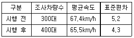
- 속도감소 효과가 있다.
- 속도증가 효과가 있다.
- 속도감소 효과가 없다.
- 속도감소 효과를 판단할 수 없다.
(정답률: 72%)
26. 교통통제시설의 설치 및 운영 시 고려해야 할 사항으로 옳지 않은 것은?
- 판독성과 시인성을 유지하도록 규칙적인 유지보수가 필요하다.
- 동일한 상황일지라도 경우에 따라 통제설비를 다양하게 사용할 필요가 있다.
- 시야에 들어오고, 충분히 반응할 수 있는 시간이 확보되는 곳에 위치해야 한다.
- 운전자들의 주의가 집중되고 운전자들이 빨리 순응할 수 있도록 설계되어야 한다.
(정답률: 76%)
27. 충격파 해석 시 충격파가 발생하는 교통류 간 충격파가 아닌 것은?
- 정지에 인한 충격파
- 추월에 인한 충격파
- 출발에 인한 충격파
- 저속차량에 인한 충격파
(정답률: 66%)
28. 차량운전 시 외부 자극에 대한 운전자의 신체적 반응과정인 PIEV 과정의 요소가 아닌 것은?
- 반응(volition)
- 지각(perception)
- 경험(experience)
- 식별(intellection)
(정답률: 87%)
29. 속도-밀도 모형에 관한 설명으로 옳지 않은 것은?
- Greenshields의 직선모형은 연속교통류의 형태를 잘 파악할 수 있다.
- Greenshields의 직선모형은 직선성의 가정이 관측자료와 일치하지 않는다.
- Underwood의 지수모형은 고속에서의 속도 추정값이 현장 측정값과 잘 맞는다.
- Greenberg의 지수모형은 밀도가 낮은 교통류에서의 속도값이 관측치와 잘 맞지 않는다.
(정답률: 55%)
30. 한 차량이 곡선반경 R=300m인 평면곡선을 주행하고 있다. 이 평면곡선의 편경사가 0.⑤, 마찰계수가 0.26이라고 할 때 이 차량이 미끄러지지 않기 위한 속도는?
- 90.5km/h
- 98.7km/h
- 103.1km/h
- 108.7km/h
(정답률: 59%)
31. 감응식 신호교차로에서 검지기가 정지선 후방 30m 지점에 설치되고 차량 1대가 차지하는 길이를 5m, 단위 연장시간을 3초로 가정하였을 때, 최소 녹색시간은? (단, Greenshields의 의 소요녹색시간 산정식 (1.6n+2.6)을 이용한다.)
- 12.2초
- 15.2초
- 18.4초
- 20.5초
(정답률: 57%)
32. 설계시간계수(K계수)에 대한 설명으로 옳지 않은 것은?
- K계수가 클수록 교통량의 변화가 적다.
- 개발밀도가 증가하면 K계수는 감소한다.
- 일반적으로 AADT가 큰 도로에서는 비교적 낮다.
- 일반적으로 지방부도로가 도시내도로보다 높은 값을 가진다.
(정답률: 59%)
33. 다음의 설명 중 옳지 않은 것은?
- AADT는 통상 ADT보다 작은 값은 갖는다.
- AADT는 연간 총 교통량을 365로 나눈 값이다.
- AADT와 ADT는 도로계획, 개선 등에 관한 분석에서 다양하게 쓰인다.
- ADT는 365일보다 적은 일 수 동안 조사된 총 교통량을 조사일 수로 나눈 값이다.
(정답률: 59%)
34. 차량추종이론(car-following)에 관한 설명으로 옳지 않은 것은?
- 반응시간은 운전자의 민감도에 의해 결정된다.
- 민감도가 지나치게 크면 교통류의 불안요소가 커지는 것이 일반적이다.
- 추종이론은 거시적 관점에서 차량의 움직임을 설명하는 교통류 이론이다.
- 고속도로에서 후미차량이 앞 차량과 유사한 움직임을 보이는 것을 설명하는 데 활용될 수 있다.
(정답률: 73%)
35. 지방부도로의 교통량 측정에 관한 설명으로 옳지 않은 것은?
- 상시조사에서는 AADT와 월 변동계수를 구한다.
- 보정조사에서는 ADT를 구하며 통상 7일을 연속 측정 한다.
- 전역조사는 1년에 12회 실시하며 통상 24~48시간 연속 측정 한다.
- 모든 도로구간이 교통량 변동 패턴별로 분류되면 상시조사 지점과 보정조사 지점을 없애도 좋다.
(정답률: 45%)
36. 아래 그림과 같이 교통류에 Bottle neck이 형성될 경우 그에 의한 충격파의 속도는?
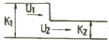
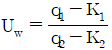
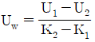
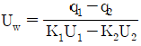
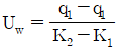
(정답률: 58%)
37. 일정기간 연속해서 교통량 조사를 수행할 때 조사기간에 따른 조사방법으로 옳지 않은 것은?
- 2시간조사의 경우는 첨두 2시간을 조사하는 경우가 바람직하다.
- 12시간조사의 경우는 12시부터 24시까지 조사하는 것이 바람직하다.
- 4시간조사의 경우는 오전과 오후 첨두 각각 2시간을 조사하는 것이 바람직하다.
- 6시간조사의 경우는 오전과 오후 첨두 각각 2시간과 그사이 2시간을 조사하는 것이 바람직하다.
(정답률: 81%)
38. 다음 중 간선도로 연동신호의 운영방법에 해당하지 않는 것은?
- 교호시스템(alternate system)
- 대응시스템(responsive system)
- 동시시스템(simultaneous system)
- 연속진행시스템(progression system)
(정답률: 51%)
39. 고속도로 기본구간의 이상적인 도로 조건으로 옳지 않은 것은?
- 차로폭 3.5m 이상
- 도로경사 5% 이하
- 측방여유폭 1.5m 이상
- 승용차로만 구성된 교통류
(정답률: 78%)
40. 다음 중 신호연동을 산정하기 위한 시공도의 작성에서 반드시 필요한 요소가 아닌 것은?
- 신호기간
- 차량길이
- 차량속도
- 교차로간격
(정답률: 64%)
3과목: 교통시설
41. 다음 그림에서 도로의 완화곡선부에 해당하는 것은?
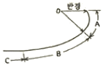
- A 부분
- B 부분
- C 부분
- A와 B 부분
(정답률: 82%)
42. 버스터미널의 버스주차대를 설계하고자 한다. 설계차량의 폭을 2.5m로 가정하여 직각주차방식으로 설계할 때 30m당 주차가능대수로 옳은 것은? (단, 차간폭은 0.4m로 가정한다.)
- 2대
- 5대
- 10대
- 20대
(정답률: 76%)
43. 다음의 교통정온화 기법 중 도로의 선현을 구분구불하게 하여 차량의 주행속도를 저감시키는 것을 무엇이라 하는가?
- 폴트(fort)
- 초커(chocker)
- 시케인(chicane)
- 과속방지턱(hump)
(정답률: 73%)
44. 고속도로 엇갈림(weaving) 구간에 관한 설명으로 옳지 않은 것은?
- 엇갈림 구간의 길이는 엇갈림 구간 진입로와 본선이 만나는 지점에서 진출로 시작 부분까지의 거리로 한다.
- 엇갈림 구간의 길이는 본선-연결로 엇갈림 구간의 경우 최소 150m를 넘게 하는 것이 통행 안전상 바람직하다.
- 엇갈림 구간의 형태는 엇갈림을 하는 차량이 차로를 변경해야 하는 최소 횟수와 출입지점의 위치에 따라 여러 가지 형태가 생긴다.
- 본선-연결로 엇갈림 형태는 각각의 엇갈림 차량들이 원하는 방향으로 주행하기 ㅜ이하여 반드시 한 번의 차로 변경을 해야 하는 구간을 말한다.
(정답률: 63%)
45. 평면교차에서 평면교차로 설계의 기본 원칙으로 옳지 않은 것은?
- 교차하는 도로의 선형은 직선을 유지하도록 한다.
- 교차로의 면적은 안정된 궤적을 위하여 가능한 한 최대가 되도록 한다.
- 두 교통류의 상대속도 차를 최소화하고 넓은 시야를 위하여 교차각은 직각에 가깝도록 한다.
- 교차로에 진입한 운전자나 보행자들이 최소한의 시간으로 신속하고 안전하게 통과할 수 있도록 한다.
(정답률: 75%)
46. 아래 내용 중 ()에 들어갈 적절한 장소는?
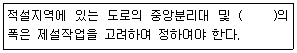
- 보도
- 교차로
- 길어깨
- 주정차대
(정답률: 78%)
47. 평균 차두간격이 2.4초인 교통류의 교통량은?
- 1500대/시
- 2400대/시
- 8640대/시
- 10000대/시
(정답률: 65%)
48. 인터체인지의 형식에 대한 설명으로 옳은 것은?
- 불완전 입체교차령은 평면 교차하는 교통동선을 2개소 이상 포함한 형식이다.
- 트럼펫형 입체교차로와 클러버형 입체교차로는 불완전 입체교차형이다.
- 완전 입체교차형은 평면교차를 포함하지 않고 각 연결로가 독립하고 있는 인터체인지이다.
- 로터리 입체교차는 연결로를 2개 이상 차도를 부분적으로 겹쳐서 엇갈림을 수반하지 않는 형식이다.
(정답률: 60%)
49. 우회전 차로의 설치 효과로 옳지 않은 것은?
- 정지선을 전진시킬 수 있다.
- 도로교통용량을 감소시킨다.
- 직진 교통의 혼란이 감소된다.
- 예각의 우회전을 용이하게 한다.
(정답률: 53%)
50. 옥내 주차장을 각 층의 연결 방식에 따라 분류한 것으로 옳지 않은 것은?
- 기계식
- 램프식
- 평행식
- 경사 바닥식
(정답률: 61%)
51. 평지구간의 고속도로를 100km/h로 주행하던 자동차가 장애물을 보고 정지할 수 있는 최소정지거리는? (단, 마찰계수 0.30, 인지반응시간 2.5초다.)
- 약 120.8m
- 약 160.5m
- 약 200.7m
- 약 240.2m
(정답률: 65%)
52. 다음 중 ()에 들어갈 말로 옳은 것은?
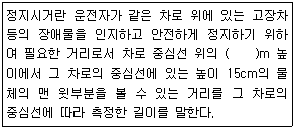
- 0.8
- 1.0
- 1.2
- 1.5
(정답률: 74%)
53. 양보차로의 설치와 통행방법에 대한 설명으로 옳지 않은 것은?
- 양보차로를 설치하면 교통사고의 위험을 감소시킬 수 있다.
- 양보차로에서는 고속자동차가 다른 자동차에게 통행을 양보해야 한다.
- 운전자가 양보차로에 진입하기 전에 충분히 인식할 수 있도록 노면표시 및 표지판을 설치한다.
- 양보차로는 양방향 2차로 도로에서 앞지르기시거가 확보되지 아니하는 구간에 교통용량과 안전성을 검토하여 설치한다.
(정답률: 77%)
54. 평면교차로에서의 도류화설계를 위한 기본원칙으로 옳지 않은 것은?
- 곡선부는 적절한 곡선반지름과 폭을 가져야 한다.
- 교통제어시설은 교통섬과 분리하여 설계하여야 한다.
- 운전자가 한 번에 한 가지 이상의 의사결정을 하지 않도록 해야 한다.
- 속도와 경로를 점진적으로 변화시킬 수 있도록 접근로의 단부를 처리해야 한다.
(정답률: 72%)
55. 설계속도가 60km/h 이상인 지방지역 일반도로 차로의 최소 폭 기준으로 옳은 것은?
- 2.75m
- 3.00m
- 3.25m
- 3.50m
(정답률: 39%)
56. 설계속도가 100km/h인 고속도로의 최대종단경사 기준은? (단, 지형은 평지이며 소형차도로인 경우는 고려하지 않는다.)
- 3%
- 4%
- 5%
- 6%
(정답률: 50%)
57. 설계속도가 다른 구간의 연결에 관한 설명으로 옳은 것은?
- 설계구간의 변경점을 교통량이 변화하는 교차로로 하는 것은 옳지 않다.
- 인접한 설계구간과의 설계속도의 차이는 30km/h 이하가 되도록 하여야 한다.
- 설계속도를 20km 감속하는 경우 10km씩 두 번에 감속하는 것보다 한번에 20km를 감속하는 것이 좋다.
- 설계구간의 변경점은 해당구간의 기하구조 변화에 대한 정보를 제공하여 충분한 거리를 두고 운전자의 사전인지가 가능하도록 주의를 기울여야 한다.
(정답률: 70%)
58. 주차장법규상 자주식주차장으로서 지하식 또는 건축물식 노외주차장의 벽면에서부터 50cm 이내를 제외한 주차장 출구 바닥면의 최소 조도(照度)는?
- 10럭스
- 50럭스
- 100럭스
- 300럭스
(정답률: 46%)
59. 노면의 종류에 따른 횡단경사 기준으로 옳지 않은 것은? (단, 편경사가 설치되는 구간은 고려하지 않는다.)
- 비포장도로 : 3.0% 이상 6.0% 이하
- 사이포장도로 : 2.0% 이상 4.0% 이하
- 시멘트 포장도로 : 1.0% 이상 1.5% 이하
- 아스팔트 포장도로 : 1.5% 이상 2.0% 이하
(정답률: 67%)
60. 다음 중 중앙분리대의 기능으로 가장 거리가 먼 것은?
- 보행자에 대한 안전섬이 됨으로써 안전한 횡단에 도움이 된다.
- 광폭 분리대일 경우 사고 및 고장차량이 정지할 수 있는 여유 공간이 제공한다.
- 필요에 따라 유턴 등을 방지하여 교통류의 혼잡이 발생되지 않도록 하여 안전성을 높인다.
- 제설 작업 시 작업 공간으로 활용되며, 차도의 배수 측면에서 양호한 도로 환경을 유지시켜준다.
(정답률: 56%)
4과목: 도시계획개론
61. 보행자전용도로에 대한 설명으로 옳지 않은 것은?
- 보행자전용도로는 일반 도로를 통하여 인식되는 도시의 구조와 질서를 약화시킨다.
- 보행자전용도로를 통하여 보행자를 자동차의 소음과 배기가스 등에서 보호할 수 있다.
- 보행자전용도로는 주거단지 내에서 발생하는 각종 생활동선의 수요를 충족시킨다.
- 보행자의 안전과 자동차의 원활한 주행을 도모하기 위해서 보행자만의 교통에 제공되는 도로를 말한다.
(정답률: 73%)
62. 도시구성의 양단부가 개방적이며 산간지대의 도시구성에 적합하고 특히 공업도시에 적합한 도시구성 형태는?
- 격자형
- 방사형
- 방사환상형
- 대상형(선형)
(정답률: 63%)
63. 토지이용계획을 수립함에 있어 정량적(定量的)인 예측변수가 아닌 것은?
- 종업원 수
- 매장의 연면적
- 생활양식의 변화
- 인구규모와 구성
(정답률: 72%)
64. 공간계획 수립을 위한 장래 인구추정 과정에서 고려하여야 할 요소로 가장 거리가 먼 것은?
- 인구의 구성
- 인구의 규모
- 인구의 분포
- 인구의 출생지
(정답률: 80%)
65. 토지와 시설에 대한 물리적 요소에 해당하지 않는 것은?
- 동선
- 밀도
- 배치
- 활동
(정답률: 69%)
66. 도시 및 주거환경정비법에서 규정하고 있는 정비사업의 종류에 해당하지 않는 것은?
- 재개발사업
- 재건축사업
- 주택건설사업
- 주거환경개선사업
(정답률: 70%)
67. 도시공원 및 녹지 등에 관한 법률에서 규정된 도시공원의 종류에 해당하지 않는 것은?
- 근린공원
- 묘지공원
- 옥외공원
- 어린이공원
(정답률: 49%)
68. 하워드(E.Howard)가 제시한 전원도시의 계획 내용에 해당하지 않는 것은?
- 계획인구의 제한
- 개발이익의 사회 환수
- 마천루를 중심으로 하는 도시
- 전원도시 주변에 중분한 농업디재가 존재
(정답률: 66%)
69. 도시공간구조이론에서 제3차 산업의 입지이론이라고도 불리는 것은?
- 다핵이론
- 선형이론
- 동심원이론
- 중심지이론
(정답률: 40%)
70. 1위 도시의 인구가 600만 명, 2위 도시의 인구가 200만 명, 3위 도시의 인구가 50만 명, 4위 도시의 인구가 10만 명일 경우 데이비드의 종주화지수는?
- 0.27
- 0.43
- 2.31
- 3.00
(정답률: 47%)
71. 생태도시에 대한 설명으로 옳은 것은?
- 압축도시의 구조만으로 생태도시의 구축이 가능하다.
- 생태도시는 자연생태계가 기능하는 원리에 따라 작동하는 도시이다.
- 도로, 공원, 녹지와 같은 기존의 도시기반시설에 의하여 작동된다.
- 생태도시는 환경오염이 적어 깨끗하고 쾌적한 자연의 목가적인 풍경만으로 작동된다.
(정답률: 60%)
72. 도시에서 녹지공간의 역할과 관계가 없는 것은?
- 도시개발 형태 유도
- 자연의 보호 및 보존
- 동ㆍ식물의 생태적 균형유지
- 공공시설을 위한 토지의 사전확보
(정답률: 60%)
73. 도시의 경제, 사회, 문화적인 특성을 살려 개성있고 지속 가능한 발전을 촉진하기 위하여 경관, 생태, 정보통신, 과학, 문화, 관광 등의 분야별로 지정하는 도시계획 관련 사항은?
- 시범도시지정
- 지구단위계획
- 도시계획시설계획
- 행정중심복합도시지정
(정답률: 60%)
74. 도시계획 수립과정의 단계로 옳은 것은?
- 목표의 설정→상황의 분석 및 미래의 예측→대안의 설정 및 평가→집행
- 목표의 설정→대안의 설정 및 평가→집행→상황의 분석 및 미래의 예측
- 목표의 설정→집행→대안의 설정 및 평가→상황의 분석 및 미래의 예측
- 목표의 설정→대안의 설정 및 평가→상황의 분석 및 미래의 예측→집행
(정답률: 59%)
75. 다음 중 도시ㆍ군관리계획의 내용에 해당하지 않는 것은?
- 용도지역ㆍ용도지구의 지정에 관한 계획
- 도시개발사업이나 정비사업에 관한 계획
- 국토의 현황 및 여건 변화 전망에 관한 계획
- 기반시설의 설치ㆍ정비 또는 개량에 관한 계획
(정답률: 66%)
76. 도시 및 지역경제 분석 방법 중 경제기반모형(economic base model)에 대한 설명으로 옳지 않은 것은?
- 분석에 필요한 자료의 구득이 매우 어렵다.
- 단순하고 이해하기 쉬워 모형의 적용이 용이한 편이다.
- 모형을 이용한 지역분석에서 가정하는 내용들에 한계가 있다.
- 지역의 성장이 지역에서 생산되는 재화의 외부 수요에 의해 결정된다는 것에 기초한다.
(정답률: 62%)
77. 1620년대 E.Burgess가 생태학적 개념에서 제창한 도시패턴은?
- 선형(linear form)
- 부채꼴형(neucli form)
- 동심원형(concentric form)
- 다핵형(multi-neuclei form)
(정답률: 72%)
78. 소득분배 상태를 나타내는 지표로서의 지니계수(Gini coefficient) 중 가장 완전한 균등분배상황을 나타내는 수치는?
- 0.5
- 0
- 1
- -1
(정답률: 49%)
79. 참여형 도시계획으로서 주민참여 도시만들기의 우리나라 최근 동향이라고 볼 수 없는 것은?
- 특정한 주제를 깊이 다룬다.
- 주민참여를 의무화하고 있다.
- 주민의 참여시가가 빨라지고 있다.
- 주민의 참여방법이 다양화되고 있다.
(정답률: 65%)
80. 가로망의 구성형태 중 인구 100만 이상의 대도시계획에 적합하고 횡적인 연결은 환상선으로, 도심부와 교외 및 외곽은 방사선으로 연결하며 도쿄, 파리에 이용한 방법은?
- 방사형
- 혼합형
- 방사환상형
- 대각삽입형
(정답률: 82%)
5과목: 교통관계법규
81. 도로법령에 따른 도로원표에 관한 설명으로 옳지 않은 것은?
- 군의 도로원표의 위치는 군수가 정한다.
- 도로원표의 크기ㆍ표기방법 및 설치기준 등은 국토교통부령으로 정한다.
- 서울특별시 도로원표의 위치는 광화문광장의 중앙으로 한다.
- 도로원표는 특별시ㆍ광역시ㆍ특별자치시ㆍ시 및 군에 각 1개를 설치하여야 한다.
(정답률: 49%)
82. 최초로 수립하는 도시교통정비기본계획 및 증기계획은 해당 지역이 도시교통정비지역으로 포함된 날부터 최대 얼마 이내에 확정ㆍ고시하여야 하는가?
- 1년
- 2년
- 3년
- 4년
(정답률: 42%)
83. 주차장법령상 주차전용건축물이라 함은 건축물의 연면적 중 주차장으로 사용되는 부분의 비율이 몇 % 이상인 것인가?
- 85%
- 90%
- 95%
- 100%
(정답률: 67%)
84. 국가통합교통체계효율화법에서 정의하는 환승센터의 종류로 옳지 않은 것은?
- 주차장형 환승센터
- 터미널형 환승센터
- 물류수송형 환승센터
- 대중교통 연계수송형 환승센터
(정답률: 47%)
85. 국토교통부장관이 도시교통의 원활한 소통과 교통편의의 증진을 위하여 도시교통정비지역으로 지정ㆍ고시할 수 있는 도시의 인구 기준은? (단, 노동복합형태의 시의 경우는 고려하지 않는다.)
- 8만명 이상
- 10만명 이상
- 15만명 이상
- 20만명 이상
(정답률: 81%)
86. 도로교통법상 차마의 운전자가 도로의 중앙이나 좌측부분을 통행할 수 있는 경우는?
- 편도교통이 혼잡한 경우
- 도로가 일방통행인 경우
- 대형차가 진로를 방해할 경우
- 중앙선이 있는 도로에서 진로를 변경하는 경우
(정답률: 70%)
87. 교통안전법상 국가교통안전기본계획에 포함되어야 할 사항이 아닌 것은?
- 교통안전 전문인력의 양성
- 교통안전에 관한 단기 종합정책방향
- 교통수단ㆍ교통시설별 교통사고 감소목표
- 육상교통ㆍ해상교통ㆍ항공교통 등 부문별 교통사고의 발생현황과 원인의 분석
(정답률: 28%)
88. 주차장법령상 주차전용건축물에 기계장치를 이용할 경우 주차장의 연면적 산정에서 제외되는 부분은?
- 기계실
- 부속실
- 관리사무소
- 자동차를 주차할 수 있는 면적
(정답률: 46%)
89. 도로교통법상 모든 차의 운전자가 다른 차를 앞지르지 못하는 장소에 해당하지 않는 것은?
- 교차로
- 도로의 구부러진 곳
- 완만한 경사의 오르막
- 비탈길의 고갯마루 부근
(정답률: 77%)
90. 도시교통정비 촉진법령상 도시교통정비 기본계획의 수립을 위한 기초조사 내용에 포함되어야 하는 사항이 아닌 것은?
- 토지이용 계획 및 지가추세
- 교통시설의 이용 현황 및 변화 추이
- 인구 등 사회ㆍ경제지표 현황 및 전망
- 교차로에서의 교통량 현황과 그 변화 추이
(정답률: 51%)
91. 국가교통기술개발계획에 포함되어야 할 사항이 아닌 것은?
- 기술의 홍보 및 교육
- 교통기술의 개발 방향과 목표
- 교통기술의 국내외 환경 분석
- 교통기술의 중장기 중점 기술개발 전략
(정답률: 68%)
92. 교통안전관리자 자격의 종류에 해당하지 않는 자는?
- 궤도교통안전관리자
- 도로교통안전관리자
- 삭도교통안전관리자
- 항만교통안전관리자
(정답률: 54%)
93. 도로교통법상의 길가장자리구역에 대한 설명으로 옳지 않은 것은?
- 안전표지 등으로 경계를 표시한다.
- 보행자 통행의 안전을 위하여 설치한다.
- 보도로부터 2.5m의 지점에서 설치한다.
- 보도와 타도가 구분되지 아니한 도로에 있다.
(정답률: 50%)
94. 국가통합교통체계효율화법령상 규정하고 있는 국가교통조사의 정기조사는 몇 년마다 실시하는가?
- 1년
- 3년
- 5년
- 10년
(정답률: 73%)
95. 국가통합교통체계효율화법령상 국가기간교통시설 중 대통령령으로 정하는 교통시설이 아닌 것은?
- 국가기간복합환승센터
- ｢도시개발법｣에 따른 시가지도로
- ｢도로법｣에 따른 국가지원지방도
- ｢도로법｣에 따른 일반국도대체우회도로
(정답률: 43%)
96. 도로법에 따른 “도로의 부속물”에 해당하지 않는 것은?
- 도로표지
- 중앙분리대
- 버스정류시설
- 도로용 엘리베이터
(정답률: 70%)
97. 주차장법상 도로의 노면 및 교통광장 외의 장소에 설치된 주차장으로서 일반의 이용에 제공되는 것은?
- 노상주차장
- 노외주차장
- 부설주차장
- 전용주차장
(정답률: 72%)
98. 도로교통법규상 횡단보도표지는 횡단보도 전 몇 미터의 도로우측에 설치하여야 하는가?
- 30m 내지 100m
- 50m 내지 120m
- 80m 내지 150m
- 80m 내지 200m
(정답률: 58%)
99. 아래 설명 중 ()안에 들어갈 알맞은 말은?
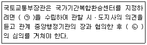
- ㉠:복합환승센터의 개발에 관한 계획, ㉡:국가교통위원회
- ㉠:복합환승센터의 관리에 관한 계획, ㉡:국가교통체계위원회
- ㉠:복합환승센터의 개발에 관한 계획, ㉡:국가교통체계위원회
- ㉠:복합환승센터의 건설에 관한 계획, ㉡:국가통합교통체계위원회
(정답률: 56%)
100. 도로법상 국토교통부장관이 도로건설ㆍ관리계획을 수립하는 도로로 옳지 않은 것은?
- 지방도
- 고속국도
- 일반국도
- 국가지원지방도
(정답률: 59%)
6과목: 교통안전
101. 주행 중이던 차량이 장애물을 보고 급제동하여 생긴 모든 바퀴들의 직선 미끄럼 흔적의 길이가 아래와 같다면, 이 차량의 미끄럼거리는?
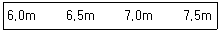
- 6.0m
- 6.5m
- 7.0m
- 7.5m
(정답률: 79%)
102. 운전자들에게 필요한 정보를 올바른 방법으로 제공하여 운전자들이 충돌을 치할 수 있게 해야 한다는 개념의 ‘Positive Guidance’의 주요 고려 개념 중 하나인 운전자의 기대심리에 대한 설명으로 옳지 않은 것은?
- 어떠한 상황에서든 과거로 회귀한다는 기대
- 차가 계속 일정한 속도로 움직일 것이라는 계속성의 기대
- 일시적 또는 간헐적으로 어떤 사건이 일어날 것이라는 기대
- 과거에 일어나지 않은 일은 계속 일어나지 않을 것이라는 기대
(정답률: 55%)
103. 다음 중 충격흡수시설의 주된 설치장소로 볼 수 없는 것은?
- 요금소 전면
- 교통섬 주변
- 연결로 출구 분기점
- 터널 및 지하차도 입구
(정답률: 46%)
104. 교통안전을 위한 사고유발인자 개선조치를 도로사용자/차량/도로 측면으로 구분하고 이를 다시 충돌전/충돌중/충돌후 개선조치로 제시한 Haddon Matrix에 대한 설명으로 옳지 않은 것은?
- 차량 측면의 충돌 후 관련 개선조치로는 충격보호장치 등이 해당된다.
- 도로사용자 측면의 충돌 전 관련 개선조치로는 운전자 교육 등이 해당된다.
- 도로사용자 측면의 충돌 후 관련 개선조치로는 비상의료시비스 등이 해당된다.
- 도로 측면의 충돌 중 관련 개선조치로는 부러지는 지주 설치 등의 노변안전조치가 해당된다.
(정답률: 55%)
1⑤. 도로교통조건과 사고에 대한 설명으로 옳지 않은 것은?
- 차량 간의 속도 분포가 크면 사고율이 높다.
- 평균 일교통량과 사고율과는 밀접한 관계가 있다.
- 일방통행도로의 사고율은 양방통행도로보다 높다.
- 교통류 내 차종 구성에서 대형 차량이 많으면 사고율이 높다.
(정답률: 79%)
106. 일반적인 교통사고의 분석목적으로 옳지 않은 것은?
- 사고 많은 지점 및 구간을 선정
- 원인분석을 통해 사고의 책임을 규명
- 국가 교통안전대책 수립의 기초자료 활용
- 교통사고 정보를 돌발정도로써 운전자에게 실시간으로 제공
(정답률: 54%)
107. 원호형 과속방지턱의 표준 설치 제원으로 옳은 것은?
- 높이 0.1m, 길이 3.6m
- 높이 0.15m, 길이 3.6m
- 높이 0.2m, 길이 1.5m
- 높이 0.3m, 길이 1.5m
(정답률: 54%)
108. 유사한 특성을 가진 지점들에 대해 미리 정해진 평균 사고율과 관련하여 특정사고율이 비정상적인지를 결정하기 위하여 통계적 검정을 적용함으로써 분석의 질적 통제가 가능한 위험지점 선정기법은?
- 사고율법
- 사고건수법
- 율-품질관리법
- 사고건수-율법
(정답률: 61%)
109. 교통사고에 영향을 주는 운전자의 능력을 육체적 능력과 후천적 능력으로 구분할 때, 후천적 능력에 해당하지 않는 것은?
- 성격
- 주의력
- 차량조작능력
- 색맹 또는 색약
(정답률: 71%)
110. 교통사고의 예방 또는 그로 인한 피해를 경감시키기 위한 대책인 ‘3E’에 해당하지 않는 것은?
- Education
- Environment
- Engineering
- Enforcement
(정답률: 74%)
111. 운전자의 정보처리과정에 대한 설명으로 옳지 않은 것은?
- 지각-식별-행동판단 과정을 합하여 인지(cognition) 과정이라고도 한다.
- 위해요소에 대하여 취해야할 적절한 행동을 결정하는 과정은 ‘행동판단’이다.
- 주의표지에 운전자가 취해야 할 행동을 구체적으로 명시하면 행동판단시간을 감소시킬 수 있다.
- 식별은 자극을 식별하여 이해하는 과정으로써 식별대상은 물체뿐만 아니라 속도까지를 포함한다.
(정답률: 46%)
112. 지도상에 일정 기간 동안 발생한 사고지점에 사고의 종류와 피해 정도에 따라 핀, 색종이를 붙이거나 표시를 하여 사고가 집중적으로 발생하는 지점을 나타내는 것은?
- 대상도
- 사고지점도
- 사고충돌도
- 사고현황도
(정답률: 69%)
113. 어느 자동차가 경사가 3%인 도로에서 급제동하였더니 제동거리로 36m로 정차하였다. 이 차량의 제동 직전의 속도는? (단, 노면과 타이어 간의 마찰계수는 0.7이다.)
- 약 61km/h
- 약 73km/h
- 약 82km/h
- 약 98km/h
(정답률: 64%)
114. 사고충돌도의 범례 중 다음 그림이 상징하는 것은?
- 측면 충돌
- 전복 차량
- 통제 불능
- 좌회전 충돌
(정답률: 72%)
115. 어느 사고다발지점에 대해 개선사업을 실시한 경우 운전자가 변화된 도로환경에 따라 과거보다 주의력을 감소시킴으로써 당초 의도한 개선대책의 효과를 상쇄시키는 경향은?
- 주관적위험(Subjective Risk)
- 위험보정(Risk Compensation)
- 사고이동(Accident Migration)
- 평균으로의 회귀효과(Regression to Mean Effect)
(정답률: 55%)
116. 다음 중 교통안전진단의 목표로 가장 거리가 먼 것은?
- 그 사업의 건설비를 최소화한다.
- 교통사고의 위험 및 정도를 최소화한다.
- 건설 후의 치료적 작업의 필요성을 최소화한다.
- 그 사업의 전공용기간의 관련 비용을 최소화한다.
(정답률: 68%)
117. 어떤 장소에서 짧은 시간 동안 수시로 충돌에 근접하는 교통현상을 관측하여 그 장소의 교통사고위험성을 평가하는 것은?
- 실험계획조사
- 교통상충조사
- 회귀분석모형
- 안전접근속도분석
(정답률: 71%)
118. 교통안전계획의 내용 중 옳지 않은 것은?
- 국가교통안전기본계획은 국토교통부장관이 5년 단위로 수립한다.
- 국가교통안전기분계획을 심의하는 주체는 국가교통위원회이다.
- 지역교통안전시행계획은 2년 단위 계획으로 각급 자치단체에서 수립한다.
- 지역교통안전기본계획은 시ㆍ도교통안전기본계획과 시ㆍ군ㆍ구교통안전기본계획으로 구분된다.
(정답률: 63%)
119. 중량이 2000kg인 차량이 30km/h로 달리다가 정차 중인 1000kg 중량의 차량과 충돌하여 얼마의 거리를 밀고 나가 정차하였다면 충돌 직후의 속도는?
- 5km/h
- 10km/h
- 15km/h
- 20km/h
(정답률: 50%)
120. 차량 A가 25m를 활주한(skidding) 후 12m 높이의 언덕에서 추락하였다. 추락 후 노면에 떨어진 지점까지의 수평거리가 15m일 경우 차량 A의 초기속도는? (단, 중력가속도는 9.8m/sec2, 마찰계수는 0.7이다.)
- 약 75.1km/h
- 약 78.5km/h
- 약 80.1km/h
- 약 83.5km/h
(정답률: 37%)